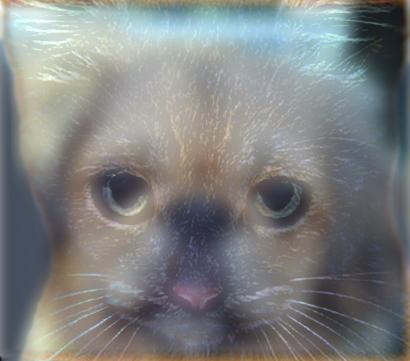
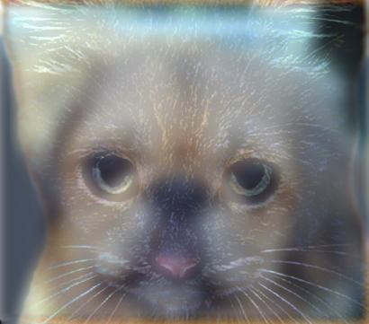

Assignment 2 Overview: Image Filtering and Hybrid Images
The goal of this project is to write an image filtering function and use it to create hybrid images using as a simplified version of the SIGGRAPH 2006 paper by Oliva, Torralba, and Schyns. Hybrid images are static images that change in interpretation as a function of the viewing distance. The basic idea is that high frequency tends to dominate perception when it is available, but, at a distance, only the low frequency part of the signal can be seen. By blending the high frequency portion of one image with the low-frequency portion of another, you get a hybrid image that leads to different interpretations at different distances.
 
